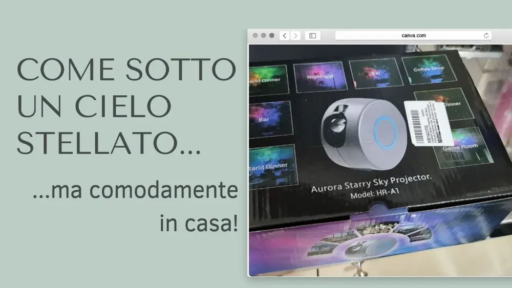
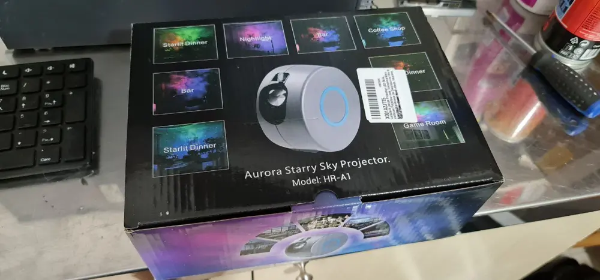
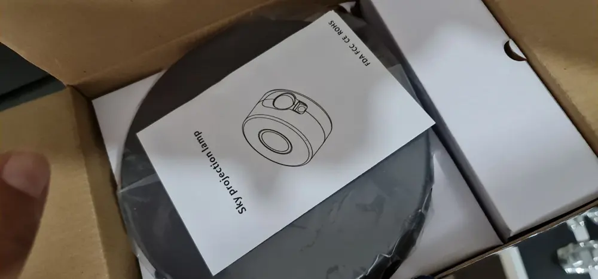

Un proiettore stellare - come sotto un cielo stellato!

Ho provato questo proiettare stellare, principalmente con l'intento di metterlo nella camera delle mie nipotine, per la notte.
Un po' però, scettica della qualità e della luminosità.

Mi aspettavo in realtà che facesse una luce foca e, invece, non posso che sentirmi soddisfatta.
Il prodotto si presenta tutto imballato perbene, con un proiettore stellare davvero poco ingombrante e facile da usare.

Vi dico subito che è soltanto corrente, quindi se decidete di acquistarlo, pensate anche bene dove posizionarlo.
Anche se vi dirò, riesce a prendere bene ogni angolo della camera e in più, se può interessare, il filo ha la lunghezza di 1 metro.
Dotato di telecomando, è possibile cambiare la tipologia di cielo stellato e colore.
Ed inoltre, c'è la possibilità di fermare il circolo di stelle e nubolose, oppure lasciare che si muovono e creano quell'atmosfera rilassante e avvolgente.
Ma non è fantastico!?!?
La cosa che più mi ha colpito, sono stati i fasci di stelle cadenti che sembrano reali.
Davvero ben fatto questo proiettore stellare e adatto sia in un angolo di casa appunto, per ricreare un momento di totale relax; magari accompagnando il tutto con una musica soft rilassante.
O anche per la camera dei bambini proprio per non lasciare lampade e luci accese, che molte volte risultano anche fastidiose di notte.
C'è anche la possibilità del controllo da remoto, quindi immaginate di stare in un'altra camera e regolare le luci ed effetti giusti da distante.
Una figata pazzesca!
Lo vedrei bene anche in un bagno con idromassaggio volendo!
Con 39,99€ creerete un'atmosfera stellare a dir poco fiabesca.
Consiglio a tutti questo prodotto.
Potete acquistarlo su Amazon a questo link CLICCA QUI
Se possedete Prime nel giro di 24/48 ore è già a casa vostra.
Ottimo rapporto qualità/prezzo, soddisfatta dell'acquisto.